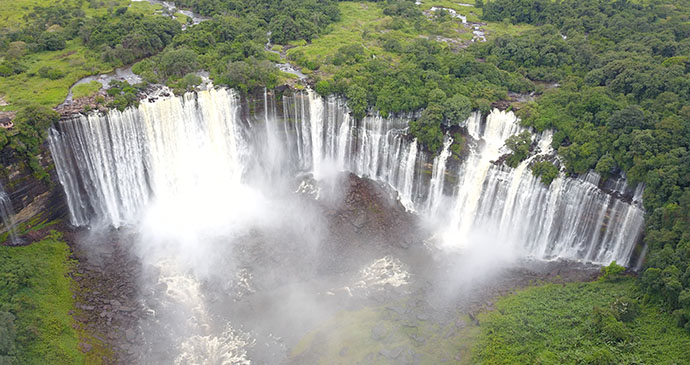

Home
Turismo
Cultura
Economia
☰
Paisagens de Angola
Cidada de Luanda

Quedas de Kalandula
Fenda de Tunda Vala
Olá, criei este site com o intuito de mostrar um pouco do meu País. Seja Bem-Vindo em Angola.
Conheça sobre cultura, economia, Paisagens de Angola.
Aproveite o máximo aqui no nosso site, explore e fique a vontade para conhecer Angola.